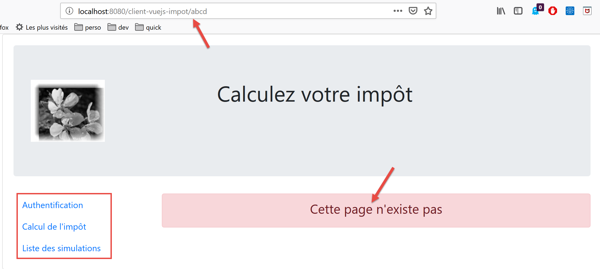

19. Vue.js 客户端改进
19.1. 简介
我们将使用开发服务器测试 [vuejs-21] 项目。因此，我们需要服务器再次发送 CORS 头部。税费计算服务器 14 版的 [config.json] 文件必须允许这些头部：

[vuejs-21] 项目最初是通过复制 [vuejs-20] 项目创建的。随后对其进行了修改 [3]。
出现了新文件：
- [session.js]：导出一个 [session] 对象，用于封装当前会话的相关信息；
- [pluginSession]：使上述 [session] 对象可在视图的 [$session] 属性中使用；
- [NotFound.vue]：当用户手动请求不存在的 URL 时显示的新视图；
以下文件将被修改：
- [main.js]：将初始化当前会话，并在用户手动输入 URL 时恢复该会话；
- [router.js]：添加了用于处理用户输入的 URL 的控制逻辑；
- [store.js]：新增了一个 mutation；
- [config.js]：新增了一项配置；
- 各种视图，主要用于在应用程序生命周期的关键点保存当前会话。随后，每当用户手动输入 URL 时，会话即被恢复；
19.2. [Vuex] 存储
[./store] 脚本的演变如下：
// plugin Vuex
import Vue from 'vue'
import Vuex from 'vuex'
Vue.use(Vuex);
// store Vuex
const store = new Vuex.Store({
state: {
// le tableau des simulations
simulations: [],
// le n° de la dernière simulation
idSimulation: 0
},
mutations: {
// suppression ligne n° index
deleteSimulation(state, index) {
...
},
// ajout d'une simulation
addSimulation(state, simulation) {
...
},
// nettoyage state
clear(state) {
// plus de simulations
state.simulations = [];
// la numérotation des simulations repart de 0
state.idSimulation = 0;
}
}
});
// export de l'objet [store]
export default store;
- 第 24-29 行：[clear] 赋值语句会删除已保存的模拟列表，并将最后一次模拟的编号重置为 0。
19.3. 会话
需要会话的原因在于，当用户在浏览器的地址栏中输入 URL 时，[main.js] 脚本会被再次执行。然而，该脚本包含以下指令：
// store Vuex
import store from './store'
此语句导入以下 [./store] 文件：
// plugin Vuex
import Vue from 'vue'
import Vuex from 'vuex'
Vue.use(Vuex);
// store Vuex
const store = new Vuex.Store({
state: {
// le tableau des simulations
simulations: [],
// le n° de la dernière simulation
idSimulation: 0
},
mutations: {
...
}
});
// export de l'objet [store]
export default store;
如第 7–13 行所示，我们导入了一个空的模拟数组。因此，如果在用户在浏览器地址栏中输入 URL 之前存在模拟数据，输入之后这些数据便不复存在。其设计思路是：
- 使用一个会话来存储用户手动输入 URL 时需要保留的信息；
- 在应用程序的关键节点保存这些信息；
- 在 [main.js] 中恢复这些信息，该文件会在用户手动输入 URL 时始终被执行；
[./session] 脚本如下：
// on importe le store Vuex
import store from './store'
// on importe la configuration
import config from './config';
// l'objet [session]
const session = {
// session démarrée
started: false,
// authentification
authenticated: false,
// heure de sauvegarde
saveTime: "",
// couche [métier]
métier: null,
// état Vuex
state: null,
// sauvegarde de la session dans une chaîne jSON
save() {
// on ajoute à la session quelques proprités
this.saveTime = Date.now();
this.state = store.state;
// on la transforme en jSON
const json = JSON.stringify(this);
// on la stocke sur le navigateur
localStorage.setItem("session", json);
// eslint-disable-next-line no-console
console.log("session save", json);
},
// restauration de la session
restore() {
// on récupère la session jSON à partir du navigateur
const json = localStorage.getItem("session")
// si on a récupéré qq chose
if (json) {
// on restaure toutes les clés de la session
const restore = JSON.parse(json);
for (var key in restore) {
if (restore.hasOwnProperty(key)) {
this[key] = restore[key];
}
}
// si on a dépassé une certaine durée d'inactivité depuis le début de la session, on repart de zéro
let durée = Date.now() - this.saveTime;
if (durée > config.duréeSession) {
// on vide la session - elle sera également sauvegardée
session.clear();
} else {
// on régénère le store Vuex
store.replaceState(JSON.parse(JSON.stringify(this.state)));
}
}
// eslint-disable-next-line no-console
console.log("session restore", this);
},
// on nettoie la session
clear() {
// eslint-disable-next-line no-console
console.log("session clear");
// raz de certains champs de la session
this.authenticated = false;
this.saveTime = "";
this.started = false;
if (this.métier) {
// on réinitialise le champ [taxAdminData]
this.métier.taxAdminData = null;
}
// le store Vuex est nettoyé également
store.commit("clear");
// on sauvegarde la nouvelle session
this.save();
},
}
// export de l'objet [session]
export default session;
注释
- 第 2 行：session 还将封装 [Vuex] 存储（模拟列表、上次执行的模拟的 ID）；
- 第 7-17 行：会话存储的信息：
- [started]：是否已与服务器建立 JSON 会话；
- [authenticated]：用户是否已通过身份验证；
- [saveTime]：上次保存的日期（以毫秒为单位）；
- [business]：指向 [business] 层的引用。其中包含用于计算税款的 [taxAdminData] 数据；
- [state]：[Vuex] 存储的状态（模拟列表、上次执行的模拟编号）；
- 第 20–30 行：[save] 方法将会话保存到运行应用程序的浏览器本地；
- 第 22 行：记录保存时间；
- 第 23 行：获取 [Vuex] 存储的 [state]；
- 第 25 行：生成会话的 JSON 字符串；
- 第 27 行：将其以 [session] 键为标识存储在浏览器的本地；
- 第 33–57 行：[restore] 方法从浏览器中的本地存储中恢复会话；
- 第 35 行：检索本地 JSON 备份；
- 第 37 行：如果检索到了数据；
- 第 39–44 行：重建 [session] 对象；
- 第 46 行：计算自上次备份以来的经过时间；
- 第 47–50 行：如果该时长超过配置中设定的 [config.sessionDuration] 值，则重置会话（第 49 行）并保存当前状态；
- 第 52 行：否则，重新生成 [Vuex] 存储的 [state] 属性；
- 第 60–75 行：[clear] 方法重置会话；
- 第 64–70 行：将会话属性重置为初始值；
- 第 72 行：[Vuex] 存储器亦被重置；
- 第 74 行：保存新的会话；
19.4. [config] 配置文件
[./config] 文件的演变如下：
// utilisation de la bibliothèque [axios]
const axios = require('axios');
// timeout des requêtes HTTP
axios.defaults.timeout = 2000;
...
// export de la configuration
export default {
// objet [axios]
axios: axios,
// délai maximal d'inactivité de la session : 5 mn = 300 s = 300000 ms
duréeSession: 300000
}
- 第 12 行：我们将像管理 Web 会话一样管理应用程序会话。在此，我们将最大闲置时长设置为 5 分钟；
19.5. [pluginSession] 插件
与以往多次实现的情况一样，[pluginSession] 插件将允许视图通过 [this.$session] 属性访问会话：
export default {
install(Vue, session) {
// ajoute une propriété [$session] à la classe vue
Object.defineProperty(Vue.prototype, '$session', {
// lorsque Vue.$session est référencé, on rend le 2ième paramètre [session]
get: () => session,
})
}
}
19.6. 主脚本 [main]
主脚本 [./main.js] 的演变过程如下：
// log de démarrage
// eslint-disable-next-line no-console
console.log("main started");
// imports
import Vue from 'vue'
...
// instanciation couche [métier]
import Métier from './couches/Métier';
const métier = new Métier();
// plugin [métier]
import pluginMétier from './plugins/pluginMétier'
Vue.use(pluginMétier, métier)
// store Vuex
import store from './store'
// session
import session from './session';
import pluginSession from './plugins/pluginSession'
Vue.use(pluginSession, session)
// on restore la session avant de redémarrer
session.restore();
// on restaure la couche [métier]
if (session.métier && session.métier.taxAdminData) {
métier.setTaxAdminData(session.métier.taxAdminData);
}
// démarrage de l'UI
new Vue({
el: '#app',
// le routeur
router: router,
// le store Vuex
store: store,
// la vue principale
render: h => h(Main),
})
// log de fin
// eslint-disable-next-line no-console
console.log("main terminated, session=", session);
- 第 19 行：导入会话；
- 第 20 行：导入插件；
- 第 21 行：将 [pluginSession] 插件集成到 [Vue] 中。执行此指令后，所有视图的 [$session] 属性中都将包含会话数据；
- 第 27 行：恢复会话。第 11 行导入的会话将使用其上次保存的内容进行初始化；
- 第 16 行之后，视图拥有一个在第 12 行初始化的 [$métier] 属性。该属性不包含用于计算税款的 [taxAdminData] 信息；
- 第 30–32 行：如果刚刚执行的恢复操作已恢复 [session.métier.taxAdminData] 属性，则视图的 [$métier] 属性将使用该值进行初始化；
19.7. 路由文件 [router]
路由文件 [./router] 的演变如下：
// imports
import Vue from 'vue'
import VueRouter from 'vue-router'
// les vues
import Authentification from './views/Authentification'
import CalculImpot from './views/CalculImpot'
import ListeSimulations from './views/ListeSimulations'
import NotFound from './views/NotFound'
// la session
import session from './session'
// plugin de routage
Vue.use(VueRouter)
// les routes de l'application
const routes = [
// authentification
{ path: '/', name: 'authentification', component: Authentification },
{ path: '/authentification', name: 'authentification', component: Authentification },
// calcul de l'impôt
{
path: '/calcul-impot', name: 'calculImpot', component: CalculImpot,
meta: { authenticated: true }
},
// liste des simulations
{
path: '/liste-des-simulations', name: 'listeSimulations', component: ListeSimulations,
meta: { authenticated: true }
},
// fin de session
{
path: '/fin-session', name: 'finSession'
},
// page inconnue
{
path: '*', name: 'notFound', component: NotFound,
},
]
// le routeur
const router = new VueRouter({
// les routes
routes,
// le mode d'affichage des URL
mode: 'history',
// l'URL de base de l'application
base: '/client-vuejs-impot/'
})
// vérification des routes
router.beforeEach((to, from, next) => {
// eslint-disable-next-line no-console
console.log("router to=", to, "from=", from);
// route réservée aux utilisateurs authentifiés ?
if (to.meta.authenticated && !session.authenticated) {
next({
// on passe à l'authentification
name: 'authentification',
})
// retour à la boucle événementielle
return;
}
// cas particulier de la fin de session
if (to.name === "finSession") {
// on nettoie la session
session.clear();
// on va sur la vue [authentification]
next({
name: 'authentification',
})
// retour à la boucle événementielle
return;
}
// autres cas - vue suivante normale du routage
next();
})
// export du router
export default router
注释
- 第 16–38 行：部分路由已通过添加额外信息进行了增强；
- 第 19 行：创建了一条新路由，用于跳转至 [Authentication] 视图；
- 第 21–24 行：通往 [TaxCalculation] 视图的路由现在具有一个 [meta] 属性（此名称为必填项）。该对象的内容可以是任意值，由开发者设定；
- 第 23 行：我们在 [meta] 上添加 [authenticated] 属性（该名称可以是任意名称）。这意味着要访问 [TaxCalculation] 视图，用户必须经过身份验证；
- 第 26–29 行：我们对通往 [ListeSimulations] 视图的路由也进行同样的设置。在此处，用户同样必须经过身份验证；
- [meta.authenticated] 属性将确保：若用户未通过身份验证，即使手动输入 [CalculImpot] 和 [ListeSimulations] 视图的 URL，也无法访问这些视图；
- 第 51–76 行：[beforeEach] 方法在视图路由之前执行。此时正是进行验证的合适时机；
- [to]：若未执行任何操作，则转至下一条路由；
- [from]：上一个显示的路由；
- [next]：用于更改下个显示路由的函数；
- 第 55 行：我们检查下一条路由是否要求用户经过身份验证；
- 第 56–59 行：如果需要，且用户未经过身份验证，则将下一个路由更改为 [Authentication] 视图；
- 第 64–73 行：处理第 30–32 行中 [endSession] 路由的特殊情况。该路由没有关联的视图；
- 第 66 行：将会话重置为初始值；
- 第 68–70 行：将 [Authentication] 视图设为下一个视图；
- 第 75 行：如果前两种情况均不适用，则直接转至路由文件指定的路由；
- 第 35–37 行：若用户输入的路由与任何已知路由均不匹配，则提供 [NotFound] 视图。该视图在第 8 行被导入。路由按路由文件中的顺序进行检查。因此，若执行到第 36 行，则意味着请求的路由不在第 18–33 行中的任何路由之列；
19.8. [NotFound]视图
如果用户输入的路由与任何已知路由都不匹配，则显示 [NotFound] 视图：

视图代码如下：
<!-- définition HTML de la vue -->
<template>
<!-- mise en page -->
<Layout :left="true" :right="true">
<!-- alerte dans la colonne de droite -->
<template slot="right">
<!-- message sur fond jaune -->
<b-alert show variant="danger" align="center">
<h4>Cette page n'existe pas</h4>
</b-alert>
</template>
<!-- menu de navigation dans la colonne de gauche -->
<Menu slot="left" :options="options" />
</Layout>
</template>
<script>
// imports
import Layout from "./Layout";
import Menu from "./Menu";
export default {
// composants
components: {
Layout,
Menu
},
// état interne du composant
data() {
return {
// options du menu de navigation
options: [
{
text: "Authentification",
path: "/"
}
]
};
},
// cycle de vie
created() {
// eslint-disable-next-line
console.log("NotFound created");
// on regarde quelles options de menu offrir
if (this.$session.authenticated && this.$métier.taxAdminData) {
// l'utilisateur peut faire des simulations
Array.prototype.push.apply(this.options, [
{
text: "Calcul de l'impôt",
path: "/calcul-impot"
},
{
text: "Liste des simulations",
path: "/liste-des-simulations"
}
]);
}
}
};
</script>
评论
- 第 4 行：它同时使用了路由视图的两列；
- 第 6–11 行：一条错误信息；
- 第 13 行：导航菜单占据左侧栏；
- 第 31–36 行：菜单的默认选项；
- 第 40–57 行：视图创建时执行的代码；
- 第 44 行：检查用户是否可以运行模拟；
- 第 45–55 行：如果可以，则在导航菜单中添加两个选项——这些选项需要身份验证和一个可运行的 [业务] 层（第 46–55 行）；
19.9. [身份验证] 视图
[身份验证] 视图的演变如下：
<!-- définition HTML de la vue -->
<template>
<Layout :left="false" :right="true">
...
</Layout>
</template>
<!-- dynamique de la vue -->
<script>
import Layout from "./Layout";
export default {
// component status
data() {
return {
// user
user: "",
// password
password: "",
// controls the display of an error msg
showError: false,
// the error message
message: ""
};
},
// components used
components: {
Layout
},
// calculated properties
computed: {
// valid entries
valid() {
return this.user && this.password && this.$session.started;
}
},
// event managers
methods: {
// ----------- authentication
async login() {
try {
// start waiting
this.$emit("loading", true);
// you are not yet authenticated
this.$session.authenticated = false;
// blocking server authentication
const response = await this.$dao.authentifierUtilisateur(
this.user,
this.password
);
// end of loading
this.$emit("loading", false);
// server response analysis
if (response.état != 200) {
// error is displayed
this.message = response.réponse;
this.showError = true;
// return to event loop
return;
}
// no error
this.showError = false;
// you are authenticated
this.$session.authenticated = true;
// --------- we now request data from the tax authorities
// initially, no data
this.$métier.setTaxAdminData(null);
// start waiting
this.$emit("loading", true);
// blocking request to the server
const response2 = await this.$dao.getAdminData();
// end of loading
this.$emit("loading", false);
// response analysis
if (response2.état != 1000) {
// error is displayed
this.message = response2.réponse;
this.showError = true;
// return to event loop
return;
}
// no error
this.showError = false;
// the received data is stored in the [business] layer
this.$métier.setTaxAdminData(response2.réponse);
// we can move on to tax calculation
this.$router.push({ name: "calculImpot" });
} catch (error) {
// the error is traced back to the main component
this.$emit("error", error);
} finally {
// maj session
this.$session.métier = this.$métier;
// save the session
this.$session.save();
}
}
},
// life cycle: the component has just been created
created() {
// eslint-disable-next-line
console.log("Authentification created");
// can the user run simulations?
if (
this.$session.started &&
this.$session.authenticated &&
this.$métier.taxAdminData
) {
// then the user can run simulations
this.$router.push({ name: "calculImpot" });
// return to event loop
return;
}
// if the jSON session has already been started, it will not be restarted
if (!this.$session.started) {
// start waiting
this.$emit("loading", true);
// initialize the session with the server - asynchronous request
// we use the promise rendered by the [dao] layer methods
this.$dao
// initialize a jSON session
.initSession()
// we got the answer
.then(response => {
// end waiting
this.$emit("loading", false);
// response analysis
if (response.état != 700) {
// error is displayed
this.message = response.réponse;
this.showError = true;
// return to event loop
return;
}
// the session has started
this.$session.started = true;
})
// in case of error
.catch(error => {
// the error is traced back to the [Main] view
this.$emit("error", error);
})
// in all cases
.finally(() => {
// save the session
this.$session.save();
});
}
}
};
</script>
评论
- 在本版本的 [Vue.js] 客户端中引入的、使用会话的语句以黄色高亮显示；
- 第 97 行和第 148 行：在 [login] 和 [created] 方法的末尾，无论这些方法内部发生的 HTTP 请求结果如何，都会保存会话（这两种情况中都使用了 [finally] 子句）；
- 第 102–150 行的 [created] 方法会在每次创建 [Authentication] 视图时执行。如果用户手动输入了该视图的 URL，会话将告知我们该如何处理；
- 第 106–115 行：如果已启动 JSON 会话、用户已通过身份验证，且数据 [this.$métier.taxAdminData] 已初始化，则用户可直接跳转至税费计算表单（第 112 行）；
- 第 117 行：在旧版本中，曾使用 [created] 方法与服务器初始化 JSON 会话。若该步骤已完成，则无需重复执行；
- 第 42–66 行：身份验证方法；
- 第 66 行：若身份验证成功，则将其记录在会话中；
- 第 67–92 行：向服务器请求税务管理数据 [taxAdminData]；
- 第 95 行：本阶段结束时，无论操作是否成功，都会更新会话的 [business] 属性；
19.10. [CalculImpot] 视图
[CalculImpot]视图的代码演变如下：
<!-- définition HTML de la vue -->
<template>
...
</template>
<script>
// imports
import FormCalculImpot from "./FormCalculImpot";
import Menu from "./Menu";
import Layout from "./Layout";
export default {
// état interne
data() {
return {
// options du menu
options: [
{
text: "Liste des simulations",
path: "/liste-des-simulations"
},
{
text: "Fin de session",
path: "/fin-session"
}
],
// résultat du calcul de l'impôt
résultat: "",
résultatObtenu: false
};
},
// composants utilisés
components: {
Layout,
FormCalculImpot,
Menu
},
// méthodes de gestion des évts
methods: {
// résultat du calcul de l'impôt
handleResultatObtenu(résultat) {
// on construit le résultat en chaîne HTML
...
// une simulation de +
this.$store.commit("addSimulation", résultat);
// on sauvegarde la session
this.$session.save();
}
},
// cycle de vie
created() {
// eslint-disable-next-line
console.log("CalculImpot created");
}
};
</script>
评论
- 第 45 行：计算出的模拟结果被添加到 [Vuex] 存储中。这会影响会话，而会话包含存储的 [state] 属性。因此，我们保存会话（第 47 行）；
- 第 51 行：我们创建了一个 [created] 方法，用于在日志中记录视图的创建；
19.11. [SimulationList] 视图
[ListeSimulations] 视图的变化过程如下：
<!-- définition HTML de la vue -->
<template>
...
</div>
</template>
<script>
// imports
import Layout from "./Layout";
import Menu from "./Menu";
export default {
// composants
components: {
Layout,
Menu
},
// état interne
data() {
...
},
// état interne calculé
computed: {
// liste des simulations prise dans le store Vuex
simulations() {
return this.$store.state.simulations;
}
},
// méthodes
methods: {
supprimerSimulation(index) {
// eslint-disable-next-line
console.log("supprimerSimulation", index);
// suppression de la simulation n° [index]
this.$store.commit("deleteSimulation", index);
// on sauvegarde la session
this.$session.save();
}
},
// cycle de vie
created() {
// eslint-disable-next-line
console.log("ListeSimulations created");
}
};
</script>
评论
- 第 36 行：在第 34 行删除模拟后，我们保存会话以反映此状态变化；
- 第40–43行：我们继续跟踪视图的创建；
19.12. 项目执行

在测试过程中，请验证以下几点：
- 如果用户通过导航菜单链接和操作按钮/链接“使用”该应用程序，则应用程序可正常运行；
- 如果用户手动输入 URL，应用程序仍能正常运行。具体而言，请执行以下测试：
- 运行模拟；
- 进入 [SimulationList] 视图后，重新加载（F5）该视图。在之前的应用程序 [vuejs-20] 中，此时模拟数据会丢失。但本应用并非如此：已执行的模拟数据仍然存在；
- 检查日志以了解：
- [main]脚本何时被执行。您会发现，每当用户手动输入URL时，该脚本都会运行；
- 视图何时被创建。您应能观察到，每次视图即将显示时，它都会被创建；
- 路由机制的工作原理。每次路由之前，都会生成一条日志，告知你：
- 你来自哪条路由；
- 即将跳转的目标路由；
19.13. 在本地服务器上部署应用程序
作为练习，请按照 |在本地服务器上部署| 章节的指引，将 [vuejs-21] 项目部署到本地 Laragon 服务器上。然后进行测试。
19.14. 开发移动版本
理论上，使用 Bootstrap 应该能让我们构建出在不同设备上都能运行的应用程序：智能手机、平板电脑、笔记本电脑和台式机。这些设备之间的区别在于屏幕尺寸。
若在移动设备上测试 [vuejs-21] 版本，会发现界面显示混乱。而 [vuejs-22] 版本已修复此问题。所有修改均在视图模板中完成，主要针对智能手机屏幕进行了显示优化。完成优化后，得益于 Bootstrap，在更大屏幕上的显示也能流畅运行。

19.14.1. [Main]视图
[Main]视图的演变过程如下：
<!-- definition HTML of the view -->
<template>
<div class="container">
<b-card>
<!-- jumbotron -->
<b-jumbotron>
<b-row>
<b-col sm="4">
<img src="../assets/logo.jpg" alt="Cerisier en fleurs" />
</b-col>
<b-col sm="8">
<h1>Calculez votre impôt</h1>
</b-col>
</b-row>
</b-jumbotron>
....
</b-card>
</div>
</template>
评论
- 第8行：原先写的是 [cols=’4’]，现在改为 [sm=’4’]。[sm] 代表 [small]。智能手机屏幕属于这一类别。其他类别包括 [xs=extra small, md=medium, lg=large, xl=extra large]；
- 第 11 行：同上；
19.14.2. [Layout] 视图
[Layout]视图的演变如下：
<!-- definition HTML of the routed view layout -->
<template>
<!-- line -->
<div>
<b-row>
<!-- three-column zone on the left -->
<b-col sm="3" v-if="left">
<slot name="left" />
</b-col>
<!-- nine-column zone on the right -->
<b-col sm="9" v-if="right">
<slot name="right" />
</b-col>
</b-row>
</div>
</template>
19.14.3. [身份验证]视图
[身份验证]视图的演变如下：
<!-- definition HTML of the view -->
<template>
<Layout :left="false" :right="true">
<template slot="right">
<!-- form HTML - post its values with the [authenticate-user] action -->
<b-form @submit.prevent="login">
<!-- title -->
<b-alert show variant="primary">
<h4>Bienvenue. Veuillez vous authentifier pour vous connecter</h4>
</b-alert>
<!-- 1st line -->
<b-form-group label="Nom d'utilisateur" label-for="user" description="Tapez admin">
<!-- user input field -->
<b-col sm="6">
<b-form-input type="text" id="user" placeholder="Nom d'utilisateur" v-model="user" />
</b-col>
</b-form-group>
<!-- 2nd line -->
<b-form-group label="Mot de passe" label-for="password" description="Tapez admin">
<!-- password input field -->
<b-col sm="6">
<b-input type="password" id="password" placeholder="Mot de passe" v-model="password" />
</b-col>
</b-form-group>
<!-- 3rd line -->
<b-alert
show
variant="danger"
v-if="showError"
class="mt-3"
>L'erreur suivante s'est produite : {{message}}</b-alert>
<!-- submit] button on a 3rd line -->
<b-row>
<b-col sm="2">
<b-button variant="primary" type="submit" :disabled="!valid">Valider</b-button>
</b-col>
</b-row>
</b-form>
</template>
</Layout>
</template>
评论
- 第 11 行和第 19 行：我们移除了 [label-cols] 属性，该属性用于设置输入框标签的列数。没有此属性时，标签会显示在输入框上方。这种布局更适合智能手机屏幕；
19.14.4. [CalculImpot] 视图
[CalculImpot]视图已更新如下：
<!-- definition HTML of the view -->
<template>
<div>
<Layout :left="true" :right="true">
<!-- tax calculation form on the right -->
<FormCalculImpot slot="right" @resultatObtenu="handleResultatObtenu" />
<!-- left-hand navigation menu -->
<Menu slot="left" :options="options" />
</Layout>
<!-- display area for tax calculation results under the form -->
<b-row v-if="résultatObtenu" class="mt-3">
<!-- empty three-column zone -->
<b-col sm="3" />
<!-- nine-column zone -->
<b-col sm="9">
<b-alert show variant="success">
<span v-html="résultat"></span>
</b-alert>
</b-col>
</b-row>
</div>
</template>
19.14.5. [FormCalculImpot] 视图
[FormCalculImpot]视图的演变如下：
<!-- definition HTML of the view -->
<template>
<!-- form HTML -->
<b-form @submit.prevent="calculerImpot" class="mb-3">
<!-- 12-column message on blue background -->
<b-row>
<b-col sm="12">
<b-alert show variant="primary">
<h4>Remplissez le formulaire ci-dessous puis validez-le</h4>
</b-alert>
</b-col>
</b-row>
<!-- form elements -->
<!-- first line -->
<b-form-group label="Etes-vous marié(e) ou pacsé(e) ?">
<!-- 5-column radio buttons-->
<b-col sm="5">
<b-form-radio v-model="marié" value="oui">Oui</b-form-radio>
<b-form-radio v-model="marié" value="non">Non</b-form-radio>
</b-col>
</b-form-group>
<!-- second line -->
<b-form-group label="Nombre d'enfants à charge" label-for="enfants">
<b-form-input
type="text"
id="enfants"
placeholder="Indiquez votre nombre d'enfants"
v-model="enfants"
:state="enfantsValide"
></b-form-input>
<!-- possible error message -->
<b-form-invalid-feedback :state="enfantsValide">Vous devez saisir un nombre positif ou nul</b-form-invalid-feedback>
</b-form-group>
<!-- third line -->
<b-form-group
label="Salaire annuel net imposable"
label-for="salaire"
description="Arrondissez à l'euro inférieur"
>
<b-form-input
type="text"
id="salaire"
placeholder="Salaire annuel"
v-model="salaire"
:state="salaireValide"
></b-form-input>
<!-- possible error message -->
<b-form-invalid-feedback :state="salaireValide">Vous devez saisir un nombre positif ou nul</b-form-invalid-feedback>
</b-form-group>
<!-- fourth line, [submit] button -->
<b-col sm="3">
<b-button type="submit" variant="primary" :disabled="formInvalide">Valider</b-button>
</b-col>
</b-form>
</template>
评论
- 第 15、23、35 行：已移除 [label-cols] 属性；
此外，我们正在更新验证测试：
...
// état interne calculé
computed: {
// validation du formulaire
formInvalide() {
return (
// salaire invalide
!this.salaire.match(/^\s*\d+\s*$/) ||
// ou enfants invalide
!this.enfants.match(/^\s*\d+\s*$/) ||
// ou données fiscales pas obtenues
!this.$métier.taxAdminData
);
},
// validation du salaire
salaireValide() {
// doit être numérique >=0
return Boolean(
this.salaire.match(/^\s*\d+\s*$/) || this.salaire.match(/^\s*$/)
);
},
// validation des enfants
enfantsValide() {
// doit être numérique >=0
return Boolean(
this.enfants.match(/^\s*\d+\s*$/) || this.enfants.match(/^\s*$/)
);
}
},
...
评论
- 第 19 行：当未输入任何内容时，该输入被视为有效。这确保了在视图初次显示时输入是有效的。在之前的版本中，该输入最初显示为无效；
- 第 26 行：同上；
- 第 5–14 行：只有当两个字段均包含数据且有效时，提交按钮才处于活动状态；
19.14.6. [菜单]视图
[菜单]视图的演变如下：
<!-- definition HTML of the view -->
<template>
<b-card class="mb-3">
<!-- bootstrap vertical menu -->
<b-nav vertical>
<!-- menu options -->
<b-nav-item
v-for="(option,index) of options"
:key="index"
:to="option.path"
exact
exact-active-class="active"
>{{option.text}}</b-nav-item>
</b-nav>
</b-card>
</template>
评论
- 第 3 行：我们添加 <b-card> 标签，用细边框包围菜单。这有助于在智能手机上更轻松地找到菜单；
19.14.7. [SimulationList] 视图
[ListeSimulations] 视图保持不变：
<!-- definition HTML of the view -->
<template>
<div>
<!-- layout -->
<Layout :left="true" :right="true">
<!-- simulations in right-hand column -->
<template slot="right">
<template v-if="simulations.length==0">
<!-- no simulations -->
<b-alert show variant="primary">
<h4>Votre liste de simulations est vide</h4>
</b-alert>
</template>
<template v-if="simulations.length!=0">
<!-- there are simulations -->
<b-alert show variant="primary">
<h4>Liste de vos simulations</h4>
</b-alert>
<!-- simulation table -->
<b-table striped hover responsive :items="simulations" :fields="fields">
<template v-slot:cell(action)="data">
<b-button variant="link" @click="supprimerSimulation(data.index)">Supprimer</b-button>
</template>
</b-table>
</template>
</template>
<!-- navigation menu in left-hand column -->
<Menu slot="left" :options="options" />
</Layout>
</div>
</template>
注释
- 第 20 行：请注意 [responsive] 属性，它确保表格的显示能适应屏幕大小：

- 在[2]中，在小屏幕上，水平滚动条可确保表格完整显示；
19.14.8. [NotFound] 视图
保持不变。
19.14.9. 移动端视图


注：当然可以创建更适合移动端的视图。我特别想到的是导航菜单，它还有改进的空间，但其他方面也是如此。本文的主要目的并非开发移动应用。如果是那样的话，我们可能会采用 Ionic |https://ionicframework.com/| 这样的框架。